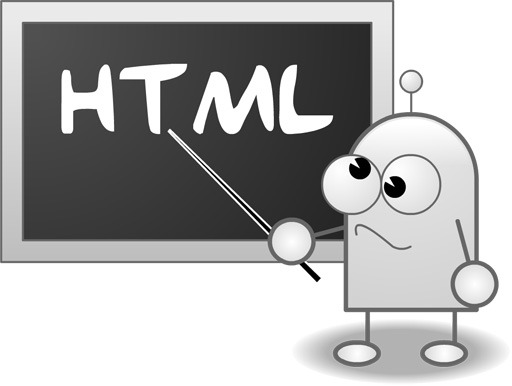

HTML5
Algunas etiquetas.Línea del tiempo.
Historia
- HTML 1.0 (1993): Primera versión de HTML creada por Tim Berners-Lee, el inventor de la World Wide Web. Fue un lenguaje de marcado simple que permitía la creación de documentos hipertextuales básicos con enlaces y texto formateado.
- Elementos estructurados: Introdujo elementos que permitieron agregar estructura al contenido de las páginas web. Estos incluían títulos, listas, párrafos e imágenes.
- Comparativa simple: Era muy simple en comparación con versiones posteriores de HTML. No tenía opciones de estilo ni la capacidad de controlar cómo se mostraría el contenido en un navegador web. Además, HTML 1.0 carecía de soporte para tablas.
- Compatibilidad con fuentes: Aunque HTML 1.0 introdujo fuentes, era limitado. En otras palabras, había un margen mínimo para cambiar el estilo o tamaño del texto.
- 
- HTML 2.0 (1995): Versión introdujo características adicionales, como formularios y tablas, y ayudó a estandarizar la forma en que se estructuraban los documentos web. También estableció el uso de etiquetas como <a> para enlaces y <img> para imágenes.
- Estandarización de HTML: Esta versión convirtió HTML en un estándar al establecer reglas y regulaciones comúnes que todos los navegadores web debían seguir.
- Formularios: Lo más importante es que HTML 2.0 introdujo el concepto de formularios, que permitía a los usuarios ingresar datos en páginas web. Sin embargo, los formularios seguían siendo básicos y sólo contenían cuadros de texto y botones.
- Tablas: Introdujo la etiqueta <table> para crear datos tabulares en páginas web, contribuyendo a una mejor organización de los datos.
- Formación de W3C: Durante HTML 2.0, los navegadores comenzaron a crear sus propias etiquetas, por lo que había inconsistencia entre los diferentes navegadores. Para resolver el problema y establecer la estandarización, se formó el W3C (World Wide Web Consortium). Esto ayudó a los navegadores web a representar etiquetas de manera consistente.
- HTML 3.2 (1997): Incluyó mejoras en la presentación y la compatibilidad con navegadores, lo que permitió una mayor control sobre el diseño de las páginas web utilizando tablas y marcos.
- Formularios Actualizados: Mejores formas de crear formularios interactivos en sitios web. Los desarrolladores podrían crear formularios que fueran más interactivos y dinámicos para los usuarios.
- Compatibilidad CSS: Otra característica importante incluida en HTML 3.2 fue la compatibilidad con CSS en un mismo archivo ayudó a los diseñadores a mejorar el aspecto de las páginas web al diseñar y personalizar elementos HTML.
- Imagenes mejoradas: El manejo de imágenes se volvió más fácil con HTML 3.2. Permitió un mejor control sobre el tamaño de la imagen, la alineación y las descripciones del texto.
- Caracteres mejorados: mplió los caracteres disponibles para las páginas web. Incluía símbolos especiales y caracteres internacionales para una presentación más diversa del contenido.
- HTML 4.01 (1999): Versión fue una revisión importante que introdujo CSS (Cascading Style Sheets) para mejorar el diseño y la presentación de las páginas web. HTML 4.01 también agregó soporte para elementos de formulario más avanzados y la capacidad de crear documentos más accesibles.
- Enlaces a CSS: Anteriormente, había que colocar CSS en cada página para aplicar los estilos. Sin embargo, con 4.01, los archivos CSS se pueden vincular e incluir en cada página HTML usando la etiqueta <link>. Esto ayudó a mantener estilos consistentes en todas las páginas web sin repetir el código CSS.
- Nuevas etiquetas: HTML 4.01 también introdujo algunas etiquetas nuevas como " <fieldset>", "<header>", "<footer>" y "<legend>". En consecuencia, estas etiquetas mejoraron la presentabilidad del contenido.
- Mejoras en las tablas:Mejoras en las tablas. Podríamos usar atributos como 'colspan' y 'rowspan' para hacer que las celdas de una tabla abarquen varias columnas o filas. Esto facilitó la creación de tablas más complicadas e interesantes.
- XHTML 1.0 (2000): XHTML (Extensible Hypertext Markup Language) fue una reformulación de HTML 4.01 en un formato más estricto y compatible con XML. Esto promovió una estructura más rigurosa en la escritura de código HTML y fomentó las prácticas de desarrollo web más limpias.
- Estándares estrictos y compatibilidad Es similar a HTML pero tiene una versión más estricta con reglas más estrictas para elementos, atributos y sintaxis. Debido a criterios tan estrictos, se creó un estándar común para las páginas web. Esto redujo las posibilidades de incompatibilidad entre navegadores.
- Compatibilidad con XML: XHTML 1.0 ofrecía compatibilidad con herramientas XML. Significaba que las bibliotecas de análisis XML y las herramientas de transformación, comúnmente utilizadas para trabajar con documentos XML, también podrían utilizarse con documentos XHTML.
- Adaptabilidad futura:: Además, los documentos XHTML 1.0 se adaptaban fácilmente a cualquier versión futura de HTML o XML sin cambios significativos.
-

- HTML 5.0 (2014): Marcó una revolución en la web al introducir numerosas características nuevas y mejoradas. Estas incluyen elementos semánticos como <header>, <footer>, y <nav>, soporte para video y audio nativos, capacidad para aplicaciones web interactivas (a través de HTML5 Canvas y WebSockets), y una mayor capacidad para el almacenamiento en el lado del cliente (LocalStorage y SessionStorage).
- Etiqueta de audio: Introdujo la etiqueta <audio>, que permite a los desarrolladores incrustar contenido de audio directamente en las páginas web. Esta etiqueta permitió la integración perfecta de clips de audio y permitió reproducir audio directamente en la página web.
- Nuevos elementos de formularios: una adición importante fue la etiqueta <input type="email">, que confirma si la entrada del usuario es una dirección de correo electrónico válida. Asimismo, otro elemento del formulario fue la etiqueta <input type="password">, que fue diseñada para capturar contraseñas de forma segura. El navegador mostraba símbolos especiales como entrada del usuario en el campo de contraseña, protegiendo así la contraseña para que no fuera revelada.
- Etiquetas Semánticas: Proporcionan organización y estructura a las páginas HTML. Estas etiquetas proporcionaron una jerarquía y un significado más claros para las diferentes secciones de una página web. Algunas de las etiquetas semánticas introducidas en HTML5 incluyen <figcaption>, <header>, <footer>, etc. Estas etiquetas también ayudaron a mejorar la accesibilidad y la optimización de la página web en los motores de búsqueda.